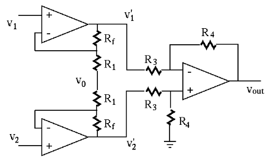
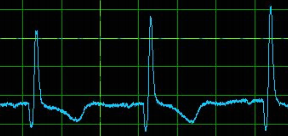

Next: About this document ...
E84 Lab: EKG
An electrocardiograph (ECG or EKG) plots the electrical activity of the heart over time. The following oscilloscope trace shows a typical EKG waveform. The spikes are called the QRS complex and correspond to muscle contraction during heart beats, with a typical interval of 0.5-1 second depending on subject's heart rate. The signal is very small, on the order of a few milli-volts, and the source impedance is high.
Build a two-input EKG signal amplifier based on an instrumentation amplifier discussed in here:

Be aware that there may exist some small but non-zero DC offset voltage between the two signal electrodes. You may need to carefully adjust the overall gain of your instrumentation amplifier (by properly selecting the values of the resistors all in kilo-ohm range), so that it is large enough to amplify the desired AC EKG signal for it to be clearly observable, but not too large so that the DC component of the output is not pushed to either the top or bottom rail, in which case the AC signal is no longer observable.
Also, your circuit may pick up some 50 Hz interference in the environment, which is to be filtered out in a future lab.
Two adhesive electrodes (available in the lab) go on your upper chest, above and to the left and right of your heart. A third reference electrode goes on your lower abdomen and connects to ground of your circuit. You may find it easiest to connect to them with alligator clips and long wires. The signal of interest is the difference between the two electrodes. Your circuit should amplify the signal so that it is readable on the oscilloscope.
Submit a brief written report containing the following items:
This is a sample EKG signal obtained by an instrumentation amplifier:
